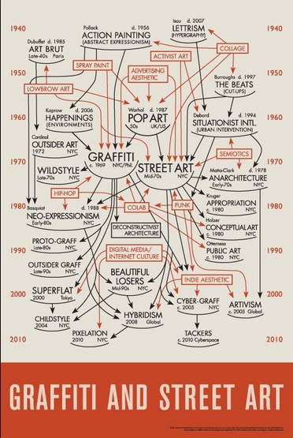
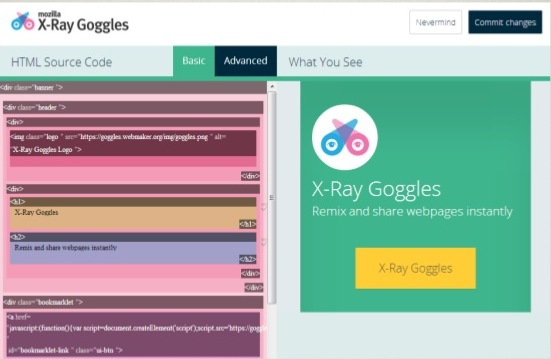

Introduction to Web Concepts
Metrics and Data Viz I
Houston Street GraffitiHello!

My name is Aurelia, I work at Mozilla Science and run a non-profit that teaches women how to code, called Girl Develop It.
You can read more about me here:
Welcome!

What we'll cover
- Terms & technologies
- Acronyms, the world wide web, languages/libraries/frameworks
- Building a web site
- Considerations, UX & IA, tools
- Web development professionals
- Team structure, hiring one, becoming one
What to expect
- This is a survey of a very broad topic
- Get a sense of what you'd like to know more about
- I don't know everything, and neither will you
- Have fun! (and ask questions)
Terms & Technologies

Terms
HTML: Hyper Text Markup Language - The code structure used to convey the content of a web site
CSS: Cascading Style Sheets - A language used to describe the presentation of the content
WYSIWYG: What You See Is What You Get - A type of editing software meant to be used by those who don't know how to code
Terms
IDE: Integrated Development Environment - Software meant to support the entire development process, often including compilation for a server-side language
CMS: Content Management System - A program that allows publishing, editing, and modifying content as well as maintenance from a central interface
Open source: A program in which the source code is available to the general public for use and/or modification from its original design
API: Application Programming Interface - An easy-to-use interface or set of tools made available to access a complex application
IP Address: Internet Protocol Address - A unique address for a computer or a server. Some IP Addresses are only unique to the network they are on while others are completely unique
DNS: Domain Name Service - A directory that associates domain names with host IPs to allow users to connect to web sites via URLs
SEO: Search Engine Optimization - The process of increasing your web site's perceived value to search engine algorithms, raising its rank in search results
IoT: Internet of Things, the network of physical devices the interact or possibly integrate into web projects
The Cloud: Services and technology that offer remote storage, processing, or other functionality by way of the internet
What is the WWW?

Home and daily life of a web site
A typical web site will live or is "hosted" on a web server. Web servers are often large computers connected to a network.
- Type a web site address into the address bar
- DNS connects you to the hosting server
- The files are then sent back to your computer for display
- Sometimes code must be compiled before being sent back to you.
Clients vs. Servers
Clients make requests, servers fulfill them (usually).
For our web discussions, client = browser, but search engine crawlers, command line interfaces, and other applications can also behave as clients.
While any type of computer can be used as a server, they are generally larger and more powerful than others.
Browsers

Parsing languages & media
Client-side:
- HTML
- CSS
- JavaScript
- Flash (with plugin)
- Images
Sever-side:
- PHP
- Perl
- Python
- Ruby
- .Net
- Java
- ColdFusion
- Databases
Not languages
- Libraries are collections of programming shortcuts for a language
- jQuery, Prototype, & Mootools
- Frameworks may include libraries, software, and more. Basically, a collection of assets/tools that helps you work in a particular language, usually from scratch
- Rails, Cake
- A specification is a set of currently acceptable rules for a given language
- HTML5 expands on the HTML4 spec and deprecates some older HTML syntax
Not languages
- AJAX is none of these, but is a technique combining multiple languages to return results from the server without needing to refresh a page. It stands for Asynchronous JavaScript And XML.

Java != JavaScript
Java:
- Server-side
- Object-oriented
- Requires special parser (JVM)
- By Sun Microsystems
JavaScript:
- Primarily client-side
- Primarily written procedurally
- Parsed by any browser
- By Netscape
Web standards
In general, this means a site should:
- Have valid HTML, CSS, and JavaScript
- Meet accessibility standards
- Meet semantic guidelines
- Have valid metadata
- Have proper character encoding
Break time!
Diagraming Site Semantics
- Find a site you like
- See what it's made out of with Built With
- Chat about it with your neighbor
- Regroup; discuss!
Building a Site

Considerations before building
- What is the purpose of the site?
- Hosting and a domain name
- Domain name registration should not cost more than $15/yr
- Hosting should not cost more than $50/yr
- Hosting choices may depend on supported server-side tech
- Whether to build it yourself or hire someone
User Experience & Information Architecture
A user-friendly, well-architected site will:
- Deepen engagement
- Increase conversion
- Raise satisfaction
- Bring users back
Sitemaps & decision trees

WYSIWYG vs. hand-coding
- WYSIWYG code editors make general assumptions about what you intended to write which often is not accurate or best
- They make the job of professionals much more difficult when the code is written poorly and filled with junk
- To truly understand what you are building, you need to learn the fundamental components
- Once you know how to code by hand, there are no limits to what you can build!
What languages to use
That depends...
- HTML and CSS will almost certainly be used
- JavaScript may be used for interactivity
- Server-side languages will likely be used for any data storage or retrieval

Demo: Diagram Some Sites
Fancy-flowed textOn-click expansion
Slideshow splunking 
Server-side languages: What are the differences?
- The main difference is syntax
- the set of rules that define the combinations of symbols that are considered to be correctly structured programs in that language
- They have slightly different strengths and philosophies
- Which you choose to use will depend on
- What you are familiar with or want to learn
- What your host supports
- Community and documentation
Hello world
PHP
echo "Hello, world!";
Java
class HelloWorld {
static public void main( String args[] ) {
System.out.println( "Hello World!" );
}
}
Hello world
Python
'Hello, world!'
Ruby
puts 'Hello, world!'
Hello world
JavaScript
Not server-side, but just for example
document.writeln('Hello, World!');
Tools of the trade
To build your web site, you will probably need:
- A simple text editor or code editor such as SublimeText, Notepad, or TextWrangler to write your code. Many can be found for free.
- A web browser such as Chrome, Firefox, or Safari to test your code. All popular modern browsers are free.
Tools of the trade
You will also need:
- An FTP (file transfer protocol) client such as WinSCP, Cyberduck, or CoffeeCup FTP to get files from your computer to the server. Many are free.
- Optionally, an image editor such as IrfanView, Gimp, or Photoshop to edit images which will be used on the web site. Some are available for free.
World of Web Development

Meet the web team
- Front end
- User Experience Designer
- Graphic Designer
- Web Developer
- Back end
- Server Admin
- Database Admin
- Software Engineer
- Overall
- QA Engineer
- Project Manager
How to hire a developer
Remember the three Rs:
- References: Talk to people who have worked with the developer before. Were they prompt? Pleasant? Forthright?
- Requirements: Can they do the work that needs to be done. Ask for samples of their prior work and ask exactly which parts of the process they were responsible for. Design? UX? DB architecture? QA?
- Reality: If it sounds too good to be true, it probably is. This website will be a reflection of you, either personally or professionally. Hire someone you feel will be invested in a job well done.
How to be hired as a socially conscious developer
- Be curious, a problem solver, and intrepid
- Build things, for yourself, if no one will pay you
- Read: documentation, user manuals, other people's code